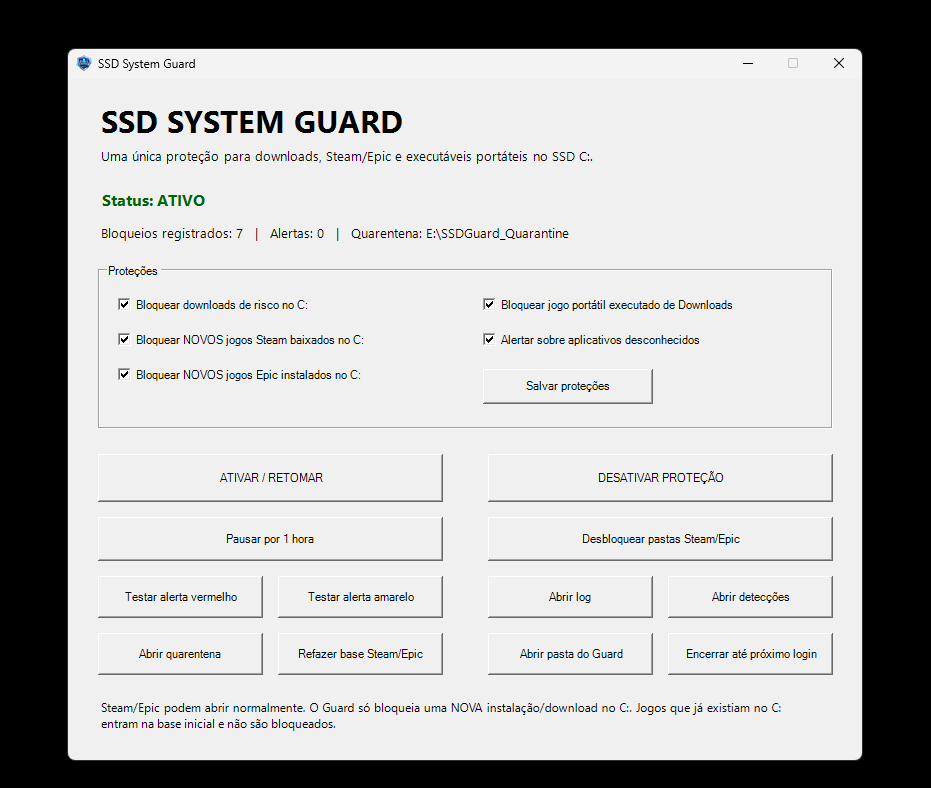
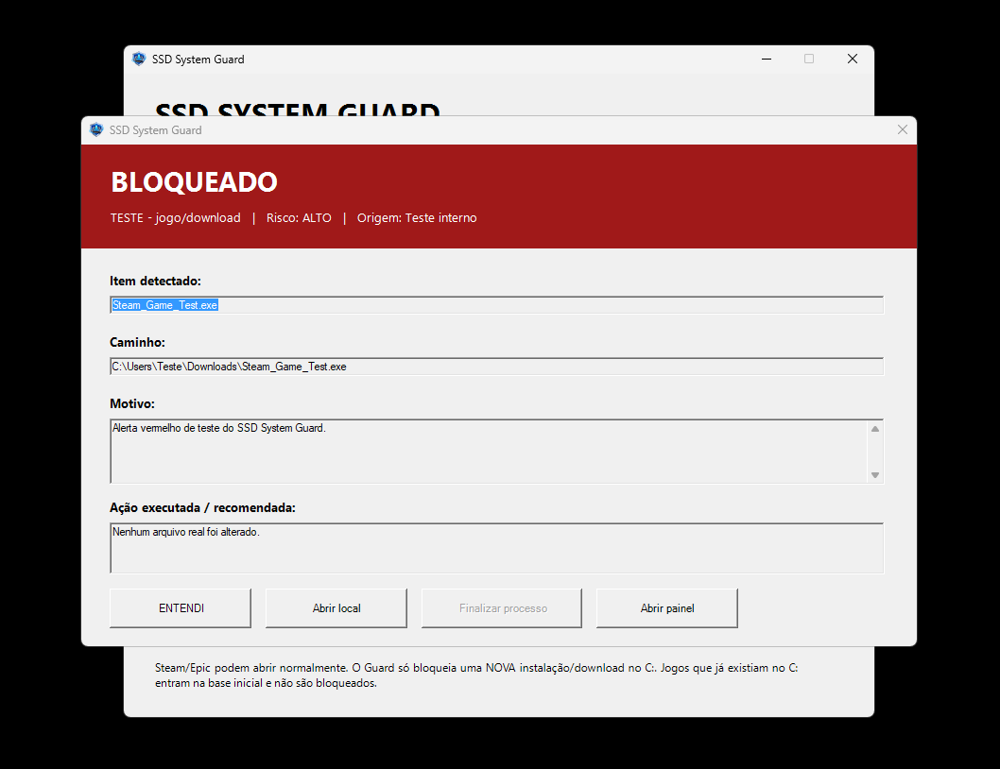

Downloads de risco no C:
Monitora itens potencialmente indesejados baixados no SSD do sistema.
O SSD System Guard monitora downloads de risco, novos jogos Steam/Epic instalados no C:, executáveis portáteis iniciados pela pasta Downloads e aplicativos desconhecidos. Quando detecta algo importante, ele avisa e permite agir rapidamente.

Baseado nos recursos já disponíveis no aplicativo.
Monitora itens potencialmente indesejados baixados no SSD do sistema.
Ajuda a impedir novos jogos da Steam de serem baixados no disco C: quando essa proteção está ativa.
Também monitora novas instalações da Epic Games direcionadas ao disco do sistema.
Pode bloquear jogos portáteis executados diretamente da pasta Downloads.
Exibe alertas quando atividades não reconhecidas precisam da atenção do usuário.
O painel centraliza registros, detecções, quarentena e controles de pausa ou desativação.
Capturas reais da interface atual do projeto.
Ative ou desative proteções, pause o monitoramento, acesse logs, detecções, quarentena e reconstrua a base Steam/Epic.

Mostra o item detectado, caminho, motivo e a ação executada ou recomendada, com acesso rápido ao local ou ao painel.
O fluxo foi pensado para ser direto, sem esconder o que está acontecendo no sistema.
O código é aberto. Sugestões, bugs e melhorias podem ser enviados pelo GitHub.